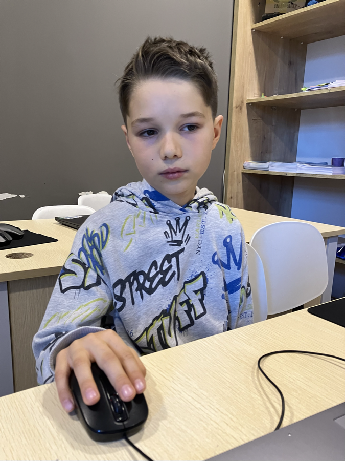

Как короткие видео влияют на внимание, настроение и учебу школьников младшего возраста. Мы провели опрос среди 29 детей и нашли ответ.
Почему мы взяли эту тему и что хотели узнать.
Возраст участников: 6–10 лет. Батуми, 2026.
Что показало наше исследование.
Мы не только изучили тему - мы сами попробовали создавать короткие видео.
Ученики 2 класса IntellectumSchool, Батуми, 2026 год.

Что мы поняли после этого проекта.
Мы провели опрос среди 29 детей 6–10 лет, изучили ответы, создали анимации в Scratch и сняли видео о влиянии коротких роликов.
Наше исследование показало: короткие видео сильно влияют на детей. Они могут радовать и даже чему-то учить - но если смотреть слишком долго, начинают отвлекать и мешать учебе.